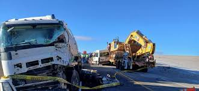

Noticias Locales:
1. Perumin culmina hoy con presencia de autoridades nacionales
- Cierre con autoridades → El evento finaliza con presencia de altos representantes nacionales.
- Impulso minero → Se resaltó la importancia de la minería en la economía del Perú.
- Desafíos futuros → Se plantearon retos sobre sostenibilidad, innovación y desarrollo regional.

2. Accidente en la carretera Puno-Moquegua
- Trágico saldo → El accidente dejó 14 muertos, entre ellos músicos bolivianos.
- Causa aparente → Un microbús chocó contra un tráiler, y un tercer vehículo estacionado habría obstaculizado la visibilidad.
- Víctimas destacadas → Entre los fallecidos se encuentra la cantante boliviana “Muñequita Flor” (Isabel Mendoza Aruquipa).


Noticias Internacionales:
1. Protestas en Francia contra la reforma de pensiones
- Movilizaciones masivas → Miles de personas salieron a las calles en varias ciudades francesas para protestar contra la reforma de pensiones propuesta por el gobierno.
- Reforma controvertida → La reforma busca aumentar la edad de jubilación, lo que ha generado descontento entre los trabajadores y sindicatos.
- Impacto social → Las protestas han provocado interrupciones en el transporte público y han afectado diversas actividades económicas.
2. Terremoto en Japón causa daños significativos
- Magnitud y epicentro → Un terremoto de magnitud 6.8 sacudió la región de Tohoku, causando daños significativos en infraestructuras y viviendas.
Noticias Relacionadas:
Para más noticias confiables y actualizadas, visita nuestra página de noticias.